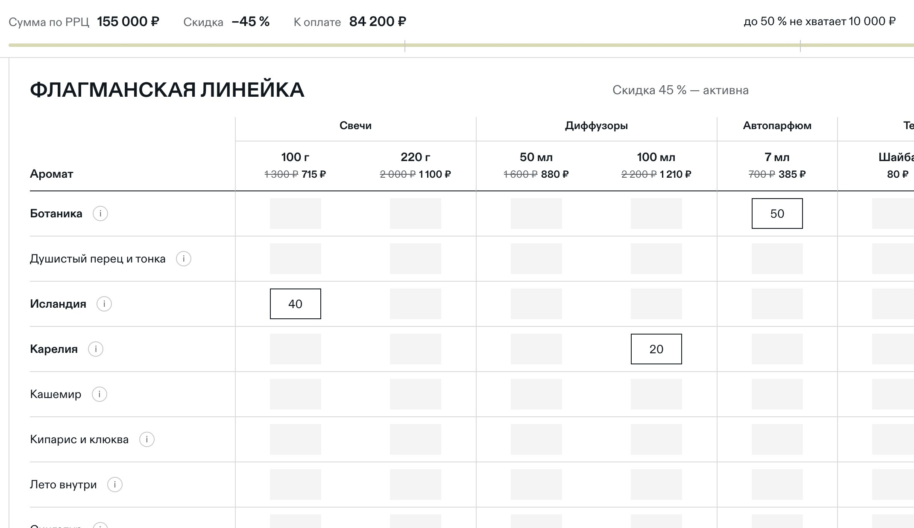
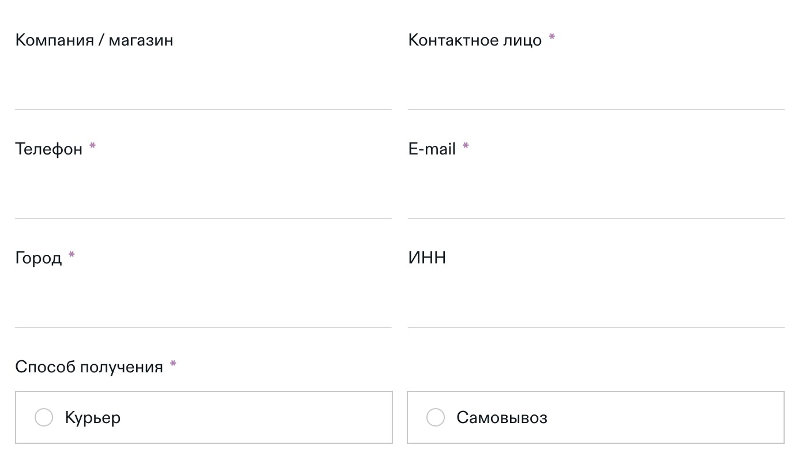

Клиент писал менеджеру, получал прайс в Excel, заполнял количество и отправлял обратно. Менеджер проверял всё вручную — долго и неудобно для обеих сторон.
Упростить оформление оптовых заказов и сократить количество ручных операций со стороны менеджеров.
Клиент самостоятельно формирует заявку, а менеджеру остаётся проверить информацию и связаться с ним. Часть ручных операций заменена автоматическими сценариями.

Клиент открывает прайс по ссылке и выбирает товары — скидка и подсказка до следующей ступени считаются сразу. Открыть прайс

Указывает данные компании и доставку и отправляет заявку.
Заявка сразу уходит в Bitrix24 и на почту, а заказ создаётся в МойСкладе — без ручного переноса.